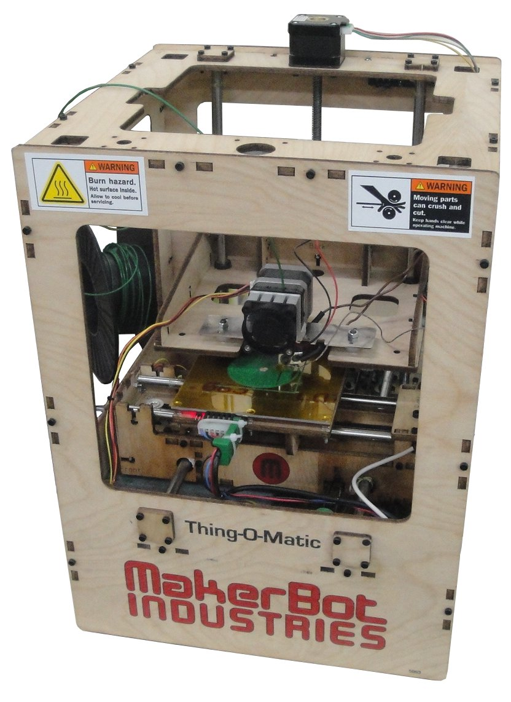

Contenido
[ocultar]Introducción
Ficha
|
 |
|
 |

Fotos
| Álbum de fotos completo en google+ |
|---|
Vídeos
Historia
- 13/Feb/2012: (fotos) Robcib-maker comienza a imprimir otra vez. Primeras pruebas
- 07/Feb/2012: Juan Gonzalez (Obijuan) se incorpora al grupo de Robótica y Cibernética de la UPM. Comienzan las reparaciones de RobCib, que llevaba un tiempo no-operativa
- 12/Nov/2011: (fotos) RobCib-maker imprime la primera pieza
- 4/Nov/2011: (Blog) Reunión en el DISAM para empezar a montar la impresora
Enlaces
|
|
Proyecto Clone Wars: Construye tu impresora 3D opensource! |
|
|
Proyecto RepRap: Impresoras 3D auto-replicantes. El origen de la revolución de las impresoras 3D opensource |